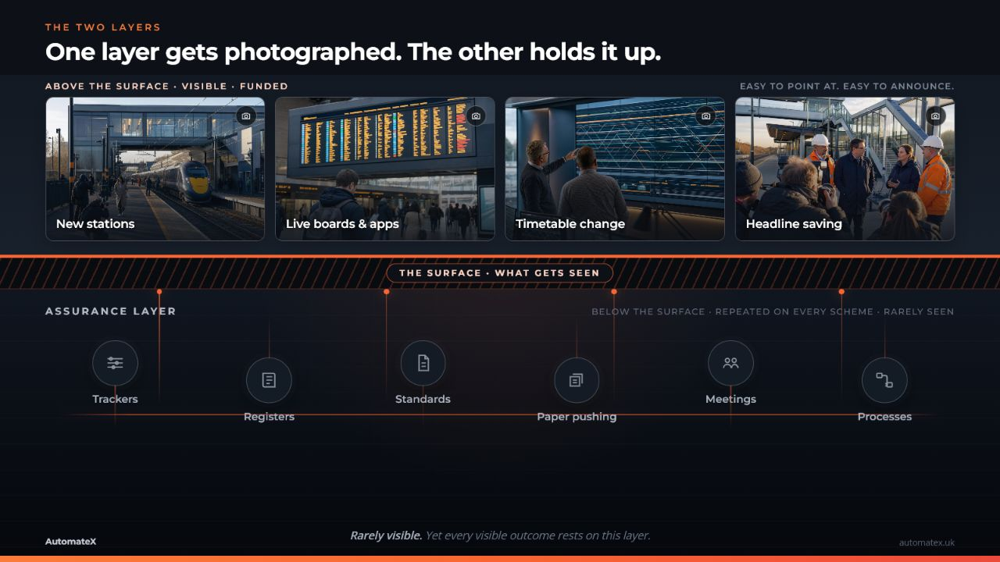
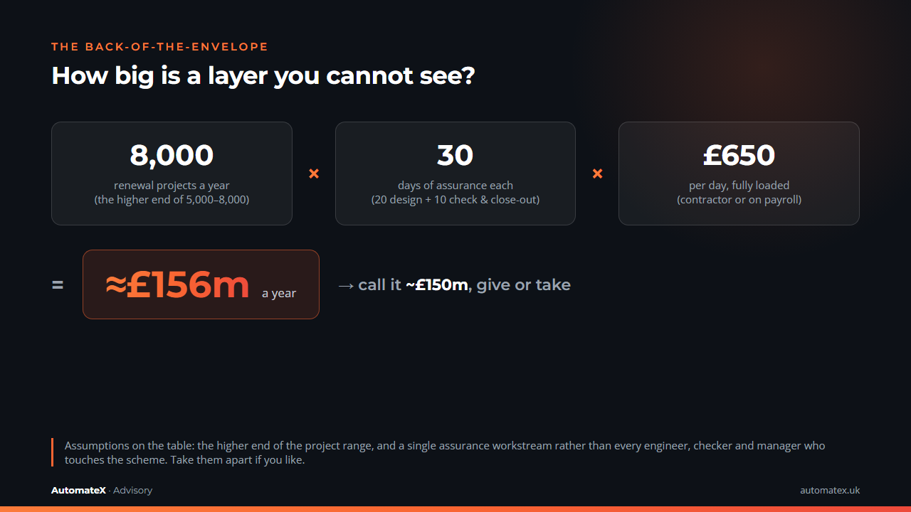
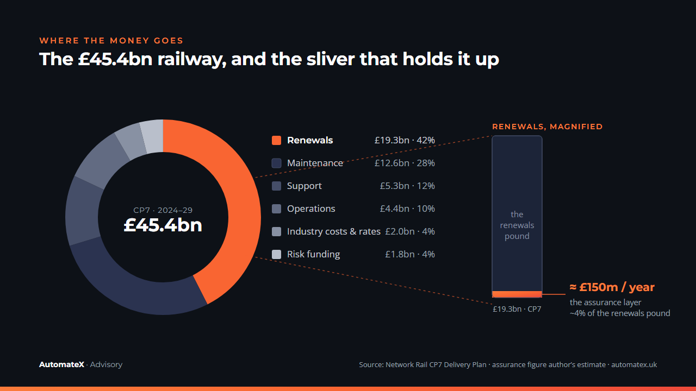
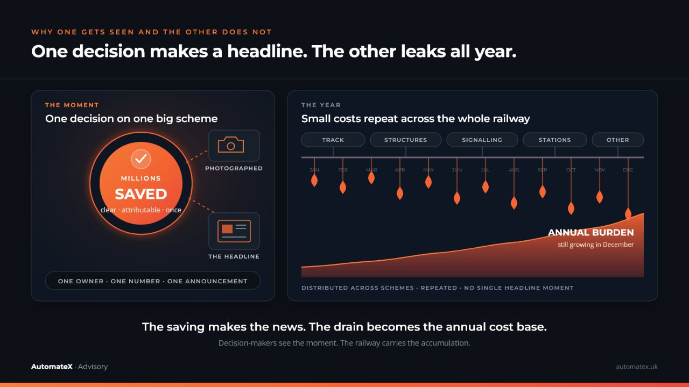

Every piece of good news in UK rail arrives with a photograph.
First published on LinkedIn.
A new station. A live departure board. An app that finally tells you the truth about your train home. A one-off saving with a number large enough to reach the trade press.
We can all see these. That is rather the point of them.
Underneath every one of them sits a layer of work that has never been photographed. That layer is what this piece is about, and I would argue it is the one worth looking at first.
What the Camera Sees
Look at where the attention, and the money, in rail innovation tend to gather.
Timetables. Major stations. The passenger-facing apps and the big boards on the concourse. The occasional one-off exercise that strips millions from a programme in a single stroke. All of it is real. All of it is worth doing, and much of it is done well.
Notice what these have in common. You can stand in front of them. A minister can open them. A passenger can hold one in a hand on the 07:42. A saving that lands once, and large, gets a slide of its own.
Visibility and value line up neatly here, so the funding follows without much of an argument. That is healthy. I would not want to talk anyone out of a better station.
The trouble starts when visibility quietly becomes the test for everything, including the work that was never built to be seen.
Beneath Every Project, a Layer of Assurance
Here is the layer.
Before a renewal scheme is built, and long after the visible works are finished, there is assurance. The certified deliverables. The design checks. The demonstration, in writing and with a signature behind it, that the thing is safe, compliant and fit to be taken into use.
It is the below-ground works of the railway. A pile cap never makes the brochure. It holds up everything that does.
I have written before about the sheer size of the standards estate this layer is dug into. More than 12,000 Network Rail standards, hundreds more from RSSB, the Eurocodes on top, scattered across portals that do not talk to each other. Every certified deliverable is an act of navigating that estate and staking a professional reputation on getting it right.
None of it is visible from the platform. You cannot photograph a Form G. You would struggle to explain one to a minister. And yet whether the visible railway stands up is decided down here, in the layer with no camera on it.

£150 Million a Year on a Layer You Cannot See
So how big is a layer you cannot see?
Let me do this in the open, on the back of an envelope, and you are welcome to take it apart.
Network Rail runs somewhere between 5,000 and 8,000 renewal projects in a year, across its regions. Track, structures, signalling, drainage, buildings. Take the higher end, 8,000. Give each one 30 days of assurance effort, 20 for the design assurance and 10 for the checking and close-out. That counts a single assurance workstream, not every engineer, checker and manager who touches the scheme. Put those days at £650, fully loaded, whether the person is a contractor or on the payroll.

Call it £150m a year, give or take. It will not be exact. It is the right order of magnitude, and that is enough to make the point.
Set that against where the money actually goes. Over the current 5-year settlement, Control Period 7, Network Rail has around £45.4bn to operate, maintain and renew the railway. Renewals alone are £19.3bn of that.

That is around 4p for every £1 spent on railway renewals. It aligns closely with what I observed while working on renewal schemes: assurance typically accounted for around 5% of the total project cost.
And every one of those pennies is the same penny as the visible railway. It comes from the same place: around £21.6bn in government support and £11.5bn in fares last year. Taxpayers and passengers fund the assurance layer exactly as they fund the station. They simply never see this half of the bill.
What isn't seen rarely gets priced.
The Cost of “It Is What It Is”
If this layer is that large, why does it stay invisible?
3 reasons, and they compound.
It has no single home in the accounts. £150m a year is not a line item. It is spread thin across thousands of schemes, 30 days here and 40 there, folded inside project costs that get reported as delivery, not as assurance.
It has no ribbon to cut. A finished assurance pack does not open. It gets filed.
And here is the most awkward one. Assurance done well produces nothing you can see at all. That is the job. A hazard that never becomes an incident leaves no trace. The reward for excellent assurance is that nothing happens.
So the work becomes easy to overlook, and its recurring cost is accepted as normal.

A one-off saving is a spike. It is loud, it is once, and it gets a photograph. A recurring drain is flat. It runs every day, on every scheme, and because it never spikes it never gets looked at. Both can cost the railway the same money over a few years. We have a name for the flat version, on the ground, when a good engineer sighs and moves on. It is what it is.
Visibility Is the Wrong Way to Set Innovation Priorities
Rail should put its next pound of innovation where the pain is greatest, the knock-on effects travel furthest and the cost grows largest once every scheme is counted. Announcement value tells us very little about any of those.
Some highly visible investments are genuinely important. A concourse screen, for example, is useful and expensive to change. It still does very little for the engineer trying to close a scheme on a Friday night.
If we let the camera choose, we will keep funding the layer that photographs well and keep stepping over the layer that quietly decides whether the railway is safe, compliant and on time.
The size sits below the line. Perhaps some of the attention should follow it there.
Before deciding where to innovate, there is one more layer to expose.
The Invisible of the Invisible
The £150m is the part I can count. It is the visible part of the invisible. Below it sits a part that resists counting altogether, and it may well be the larger prize.
Start with where the £150m actually goes. Railway assurance is governance-intensive and process-driven, for good reasons that grew one incident at a time. But it means there are many layers between an engineer and the engineering. Formatting, citation chasing, version drift, opinion-driven comment cycles, signature chasing, status reporting, blank-page drafting and coordination meetings are only some of them. Feed the £150m through those layers and watch each one take its share.

On our read, the core of it, the actual engineering judgement that only a competent person can give, might be £20m of the £150m. The rest is work for the work. That gap is invisible too, sitting inside a number that was already invisible.
Now turn it round.
Take the engineering core—where professional judgement is applied, decisions are made and risks are managed—and ask what it touches. A slow assurance layer does not stay politely in its lane. It delays programmes. It breeds rework. It burns senior people out, and it walks their knowledge out of the door when they leave. It makes bids less competitive. It thins the margin of confidence that a scheme is genuinely safe rather than merely signed.

None of those carry a clean pound sign. You cannot invoice for a hazard caught early, or for an engineer who stayed. That is exactly why a model that funds only what it can measure will keep underpricing them. The leverage is real, it is large, and it is uncountable.
Improve assurance once. The benefit travels across the railway.
The Barrier Was Never the Technology
Here is the part that should be encouraging.
This layer is, strangely, one of the more solvable problems in rail. A new station is a decade of civils and consents. A Form G is a defined, repeatable act of judgement wrapped in a great deal of process. Rule-dense, bounded, repeatable. That is precisely the shape of problem technology is good at, once the judgement is kept where it belongs, with the engineer, and the admin around it is lifted away.
The barrier was never the technology. Finance, aerospace and law have all pulled the assurance core out of the paperwork around it. The barrier is attention, and the leadership to spend it here.
And that leadership has to come from inside the flow. It needs people who have lived every frictional moment, who understand what sits behind “it is what it is”, and who are willing to have difficult conversations about the railway’s sacred cows. Some can be retired. Others must never be touched. Assurance is no place to move fast and break things. It needs someone who knows exactly what must not break, and can still see how much of the rest is only habit.
AI needs to earn its keep in rail. Rail faces the same test.
Passengers make that judgement every time they compare a train with the car, coach or plane. Price is part of it. A 2024 comparison of 27 European operators found that the three UK operators it studied—Avanti, GWR and Eurostar—were the most expensive in its sample. ORR then recorded GB rail fares rising 5.1% in 2025, ahead of RPI inflation at 3.2%.
The railway has to become more useful, affordable and dependable, while getting more value from every pound it receives. Digital innovation and AI can help. The quality of that help will depend on leaders who know the work from the inside: where the friction is, which judgement must be protected and which habits technology has made ready to retire.
This will involve difficult conversations and sometimes real disruption. They cannot be ducked. Self-driving cars are moving from trials towards passenger services on British roads, and the next leap in road transport could change the cost, convenience and economics of travel far faster than rail expects. Rail should not assume that its place in the transport mix of 2050 is inevitable. It will have to earn it.
AI will earn its keep in rail by helping rail earn its keep in the future.
Assurance, largely unseen and repeated across every scheme, is a sensible place to start. You can see how we think about it at automatex.uk.